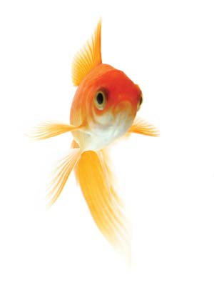

Collecting rainwater in a barrel is an excellent way to obtain free water for household or patio plants. But if you leave the barrel uncovered, you'll have to do something to prevent mosquitoes from breeding in it.
One effective and safe means for limiting mosquito populations is by using products containing Bacillus thuringiensis (Bt), which is harmless to humans and most other animals. However, there is another inexpensive solution that will turn your rain barrel into a mini ecosystem - add a couple of goldfish. Feeder goldfish are inexpensive (25 cents or less at pet and aquarium stores). I use the American-bred Comet goldfish, which are better adapted to a variety of environments. The Comet eats mosquito larvae and will also feed on algea growth. If they get too big for your barrel, they can be tranferred to a fish tank, backyard pond or even traded for smaller fish.
Your rainwater barrel will be a small habitat for living organisms, as well as provide chemical-free water for your house and patio plants. Maybe a frog will even move in.
|
 ISTOCKPHOTO/TAMARA MURRAY Goldfish are useful for mosquito control in water barrels or backyard ponds. |
|
|